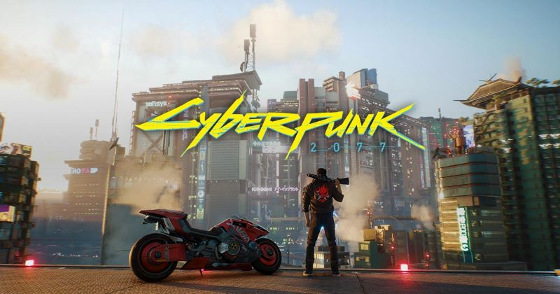

Lançamentos marcantes no mundo dos videojogos
Lançamento de Starfield Impressiona com Gráficos de Próxima Geração
Data: 6 de setembro de 2023
Starfield, o novo RPG espacial da Bethesda, finalmente foi lançado e está recebendo elogios pela sua imersão e gráficos deslumbrantes. Jogadores estão encantados com o vasto universo e a liberdade de exploração que o jogo oferece.

Cyberpunk 2077: Phantom Liberty Expansão Anunciada
Data: 26 de setembro de 2023
A CD Projekt Red revelou uma nova expansão para Cyberpunk 2077 chamada "Phantom Liberty", trazendo novas missões, personagens e melhorias na jogabilidade.

Remake de Silent Hill 2: Novos Detalhes Revelados
Data: 31 de agosto de 2024
A Konami divulgou novas imagens e detalhes sobre o remake de Silent Hill 2, destacando uma abordagem fiel ao clássico de terror.
Call of Duty: Modern Warfare III Beta Aberto Anunciado
Data: 28 de agosto de 2024
A Activision anunciou que o beta aberto de Call of Duty: Modern Warfare III estará disponível em outubro, prometendo novas armas, mapas e modos de jogo.